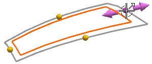

调整大小参数
调整大小参数是扩大对话框中的主要部分，允许您指定曲面在四条边上扩大或缩小的百分比。
一共有四个滑块和数值输入框：
-
% U 起点
-
% U 终点
-
% V 起点
-
% V 终点
您可以使用滑块或输入框，或者拖动图形视图窗口中的手柄来控制大小。
选择图形窗口中的手柄，可以自动确定使用对话框中的哪个参数与之相关联。

如果需要，选中全部  复选框，将把相同修改应用到片体的所有边。
复选框，将把相同修改应用到片体的所有边。
重置调整大小参数按钮将把所有参数重置为0。